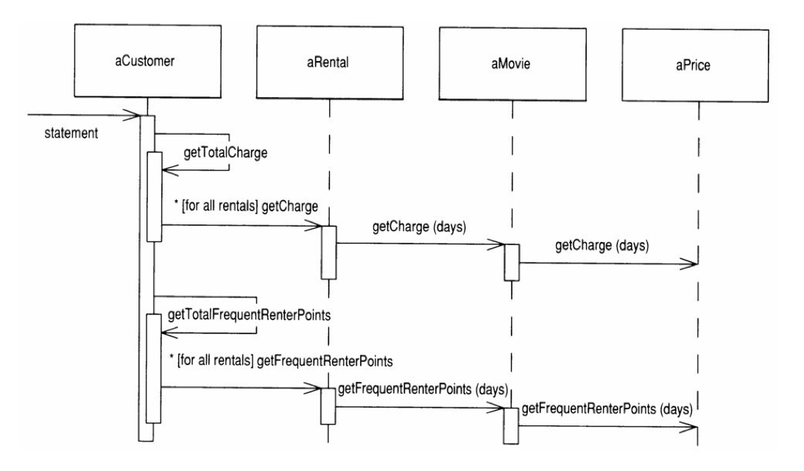
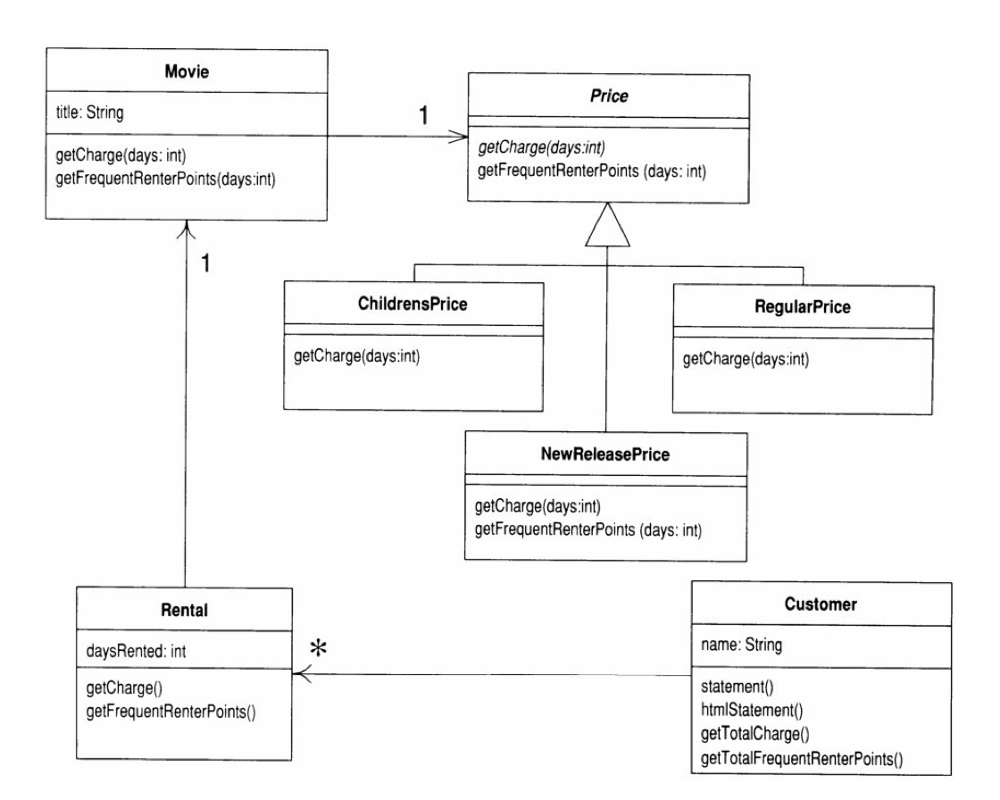
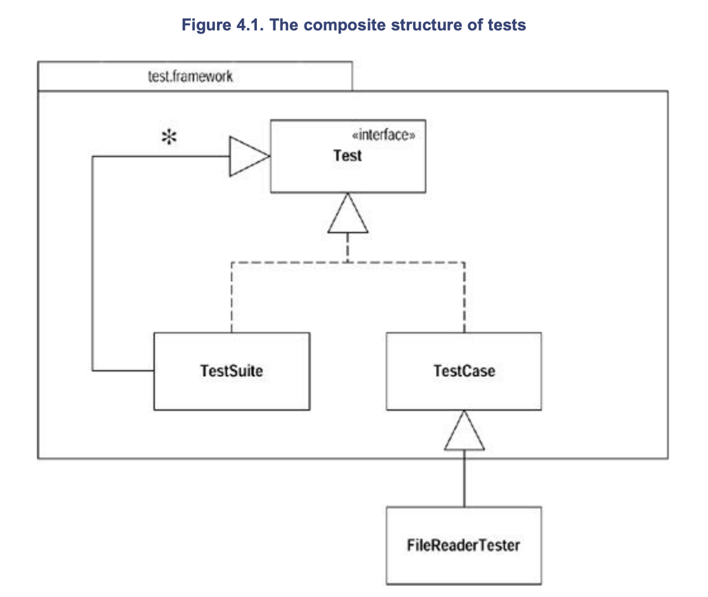
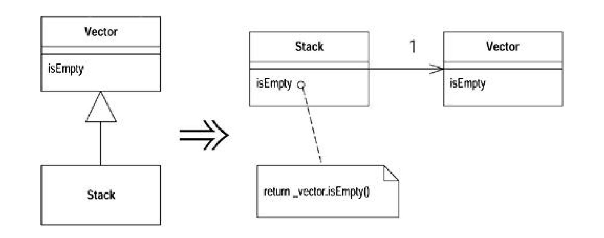
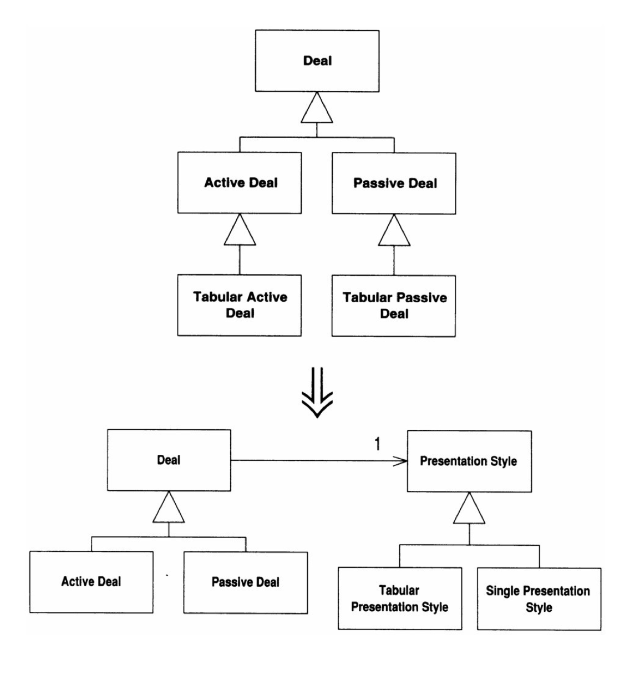
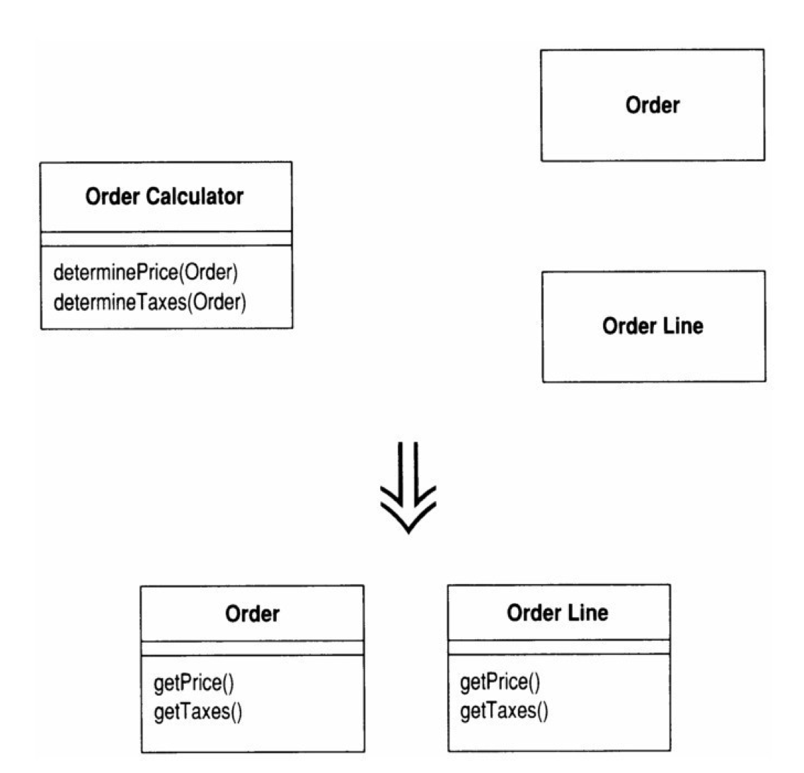
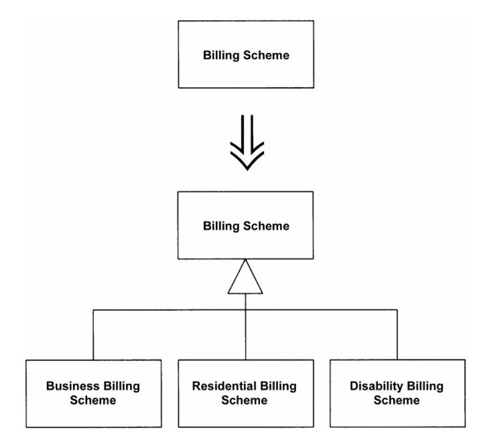
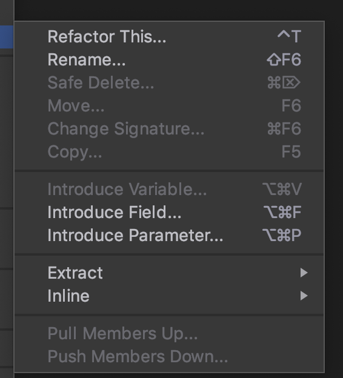
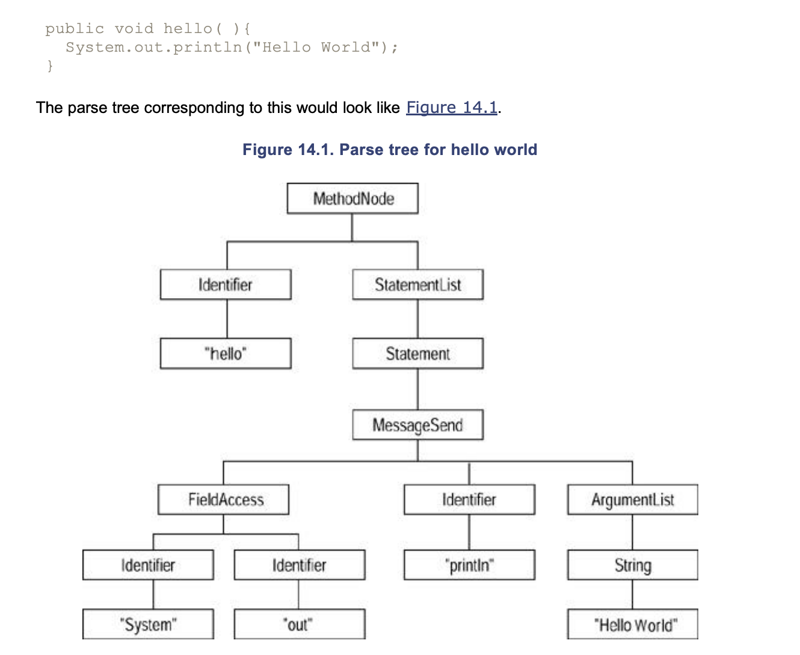

=============30/07/2020=============
Today I started reading the book recommended at CompSci701 class:
Martin Fowler (feat. Kent Beck) Refactoring: Improving the Design of Existing Code. Addison-Wesley (2012).
I am reading the Chinese translated version, translated by Mr 熊节. I will write my note back in English to reinforce learning.
Introduction
When to Refactor
This is a nice description for when to refactor, which could help me consider how I improve my assignment.
If you want to add a new feature to the program, and the structure of the code makes it inconvenient to do so, then refactor before adding the feature.
Before refactoring
Good tests are the foundation for refactoring!
Refactoring could introduce bugs, so write a reliable testing environment to ensure you don’t break things during refactoring.
Extract methods
The smaller your code block, the easier to manage, change and move them.
To extract methods, you need to find the local variables and parameters.
Any unchanged variables in the long block could be passed to the extracted method/function as arguments.
Be careful with changed variables”. If there is only one variable’s value being changed, it can be the return value of the new argument.
Placing methods in the right place
Most of the time, functions/methods should be put in where the data it uses belongs. This is relatable to a static method I wrote for Kalah:
1 | /** |
To start with it was in the Kalah class because this is where it is used.
Then I moved it to KalahJudge class because I don’t want Kalah to know too much about processes other than driving the game state.
Finally I moved it to KalahPlayer, because:
KalahPlayeris all this method deals with and needs to know;- If I put this “constructor” method in
KalahPlayer, I will be able to makeKalahPlayer‘s constructor private, because this should be the only way to create a validKalahPlayerinstance.
Try to get rid of temporary variables
Temporary variables could be problems. They are only valid in the function they belong to, and therefore could contribute to a long and complex function. It is easy to lose track of temporary variables in a long function.
Performance issue in refactoring
Replacing temporary variables with query could cause performance issue. For example, there might need to be extra loops in the query method. It says could because you never know until you run assessments on the running time. You do not need to worry about this when you refactor. Worry about them when you are optimising - by that time you are at a good position with well-refactored code.
Don’t switch on another object’s attribute
With the Movie and Rental example in the book, getCharges switch among different movie types.
This method is originally in the Rental class and uses the getDaysRented() method belonging to Rental and the getPriceCode() method belonging to Movie:
1 | double getCharge() |
It should be moved to Movie class and pass the result of getDaysRented as an argument.
This is because this method depends on how many possible priceCode there are in Movie.
If the potential change to this system is an addition of new movie type/priceCode, we want to contain the change caused by adding new movie types within the Movie class.
State pattern by Gang of Four
This looks like the Strategy pattern, but is different because Price class represents a “state” of the movie, instead of a “behaviour”. It could be updated from NEW to REGULAR after some time.

Related refactoring technique:
- Replace Type Code with State/Strategy
- Replace Conditional With Polymorphism
Interactions after adding the State pattern:
UML after adding the State pattern:
Principles of Refactoring
What is refactoring
A change to the internal structure of a software to improve its comprehensibility and reduce its maintaining cost, without changing its observable behaviours.
When to refactor
You do not refactor for the sake of refactoring. You have another goal and use refactoring to facilitate that.
Three strikes and refactor
Don Roberts’ “The rule of three”:
The third time you do something similar, you refactor.
Refactor when adding new functionality
- Refactoring helps us understand the code to be modified;
- Refactoring makes the structure clear and easier to be extended.
Changing Published Interfaces when Refactoring
If you change the interface, anything could happen.
The problem with refactoring is that some refactoring techniques DO change interfaces - as simple as Rename Method (273). What’s its impact on the treasured notion of Encapsulation?
- If all callers are under your control, no problem - even with a public interface.
- Published is a step ahead public. If an interface is published, i.e.
Maintain both old and new interfaces
Rewrite old function to call the new one
Don’t copy the function implementation, or you’ll get stuck into code duplication!
Use Java’s deprecation facility
Mark the old interface as deprecated so that your callers will notice.
Try not to publish interfaces unless necessary
Organizations with an overly strong notion of code ownership tend to publish interfaces inside the team too early. This will introduce unnecessary needs to maintain new/old interfaces.
Change your notion of ownership, and let everyone be able to change others’ code to adapt to new interfaces. This will make refactoring much smoother.
A special interface change: adding a new exception in throws clause
This is not change to function signature, so you cannot use delegation to cover it. But the compiler will be unhappy with this change.
To solve this, define a superclass exception for a whole package (such as SQLException for java.sql) and ensure that public methods only declare this exception in their throws clause.
This way, callers will only know the more generic exception, while we could define new subclass exceptions as we need.
When not to refactor
When rewriting is just easier
A clear signal for rewriting instead of refactoring is: the current code could not function properly.
Remember, before refactoring, your code should be functional in most cases.
Break into components first
A compromise route is to refactor a large piece of software into components with strong encapsulation. Then you can make a refactor-versus-rebuild decision for one component at a time.
Before the deadline of the project
Avoid refactoring at this time, because the productivity you gain will only be available after the deadline.
Refactoring and Performance
Even if you totally know the system, do measure its performance instead of assuming.
The secret to fast software, in all but hard real-time contexts, is to write tunable software
first and then to tune it for sufficient speed.
Three ways to write fast software:
Time budgeting
Often used in hard real-time system.
Budget each component certain amount of resource - time and footprint.
Constant attention approach
Try to keep high performance anytime doing anything.
This feels attractive but are not so effective. Problems:
- Changes that improve performance usually make the program harder to work with. This slows development.
- The performance improvements are spread all around the program, and each improvement is made with a narrow perspective of the program’s behavior.
Delay until your performance optimization stage
If you optimize all the code equally, you end up with 90 percent of the optimizations wasted, because you are optimizing code that isn’t run much.
Focus on writing well-mannered program, and then follow specific procedure to adjust the system’s performance later in your development, when you enter a performance optimisation stage.
Use a profiler to monitor the system
First you use a profiler to tell you what places in your system consumes the most time and space.
Focus on “performance hot spots” for optimisation
Then you could focus on these “performance hot spots” to conduct optimizations.
Stay cautious
Just like refactoring, you should adjust in small steps when optimising:
Adjust in small steps
For each step, compile, test, rerun the profiler. If no improvements, undo the adjustment.
Follow the above process of finding and removing hot spots, until you get the performance wanted by your client.
How refactoring helps late optimisation
Although refactoring could slow down the software in the short term, a well-refactored programme helps this style of refactoring in two ways:
- More time to focus on performance because adding new features is now quicker.
- Finer granularity for your performance analysis.
=============31/07/2020: Bad Smells=============
Today I’ll be reading chapter 3: Code smells. The number behind the technique name is the page number in the book in the Chinese Kindle version for future reference.
No set of metrics rivals informed human intuition.
Duplicated Code
- Same expressions in two functions in one class: Extract Method(110)
- Same expressions in sibling subclasses: Extract Method(110) and Pull Up Method(332) into their superclass
- Similar methods in sibling subclasses: Extract Method(110) to separate identical parts and differences, then you mind find the opportunity to use Form Template Method(345) to get a Template Method pattern.
- Functions doing the same thing with different algorithms: choose the clearer one and use Substitute Algorithm (139).
- Two unrelated classes using duplicated code:
- Extract Class(149) and move the duplicate code into an independent class
- Or maybe it should only belong to one class and be invoked in the other.
Long Method
The object programs that live best and longest are those with short methods.
All of the payoffs of indirection— explanation, sharing, and choosing—are supported by little methods
Older languages carried an overhead in subroutine calls, which deterred people from small methods. Modern OO languages has almost eliminated this overhead.
It takes effort to read the methods though, so the key to making small methods comprehensible is a good name, so that your reader do not need to jump to the methods to know what it does.
Be more aggressive about decomposing methods
A heuristic we follow:
When you feel the need to add comment to explain something, extract what needs to be explained into a new method, and name it with its intention(not how it does the job).
We can do this on even a short line of code, even if the method is longer than the code it replaces.
The key here is not method length, but the semantic distance between what the method does and how it does it.
When there are many parameters and temporary variables
If you use Extract Method(110), you’ll get a lot of parameters passed to the extracted method.
- Replace Temp with Query(120) to eliminate these temporary elements.
- Introduce Parameter Object(295) and Preserve Whole Object(288) to make your long parameter list cleaner.
- If you’ve tried that, and you still have too many temps and parameters, it’s time to get out the
heavy artillery: Replace Method with Method Object(135).
Deciding which code to extract
Comments
Comments often signal the semantic distance between the code’s intention and how it does it.
A block of code with a comment that tells you what it is doing can be replaced by a method whose name is based on the comment.
Conditionals and loops
Conditionals and loops also give signs for extractions.
- Use Decompose Conditional(238) to deal with conditional expressions.
- With loops, extract the loop and the code within the loop into its own method.
Large Class
If you want to do too many things with a single class, it often shows up as too many instance variables - then duplicated code will not be far behind.
- When you have too many instance variables:
- Extract Class(149) and organise several variables into a new class.
- If several variables has the same prefixes or suffixes they might belong to the same component
- You could Extract Subclass(330) when suitable.
- When you have too much code: Also Extract Class(149) and Extract Subclass(330)
- First find out how the clients use the code, then Extract Interface(341)
- If your large class is a GUI class, you could move data and behavior to a separate domain object.
- This may require keeping some duplicate data in both places and keeping the data in sync. Duplicate Observed Data(189) suggests how to do this.
Long Parameter List
In object-oriented programs, parameter lists tend to be much smaller than in traditional programs. This is because you just need to pass your method with enough objects for it to help itself to everything it needs.
- If a request to an existing object could replace a parameter, Replace Parameter with Method(292). Here the “existing object” could be:
- a field within the class that the method belongs
- another parameter
- Preserve Whole Object(288) to collect a handful of data from the same object, and replace these parameters with that object.
- If some data items have no logical object, you could Introduce Parameter Object(295) to create a “parameter object”.
- One important exception: Sometimes you do not want to create dependency from the called object to the larger object. In those cases unpacking data and sending it along as parameters is reasonable.
- pay attention to the pain involved. If the parameter list is too long or changes too often, you need to rethink your dependency structure.
Divergent Change
Divergent change occurs when one class is commonly changed in different ways for different reasons.
To clean this up you identify everything that changes for a particular cause and use Extract Class to put them all together.
Shotgun Surgery
You smell Shotgun Surgery when every time you make a kind of change, you have to make a lot of little changes to a lot of different classes.
- In this case you want to use Move Method and Move Field to put all the changes into a single class.
- If no current class looks like a good candidate, create one.
- Often you can use Inline Class to bring a whole bunch of behavior together.
Divergent change is one class that suffers many kinds of changes, and shotgun surgery is one change that alters many classes.
Either way you want to arrange things so that, ideally, there is a one-to-one link between common changes and classes.
Feature Envy
- A classic smell: a method’s interest is higher than its interest in its own class. Often desiring for data.
- Solution: Move the method to the place it wants to be.
- When a method wants to use features from multiple classes, decide by seeing which class owns the data most used by this method.
Some Design Patterns require you to break this rule
These patterns are used to fight against the smell of Divergent Change, and to put things that change together in the same place.
GoF’s Strategy pattern
Makes it easy for you to change a method’s behaviour, because it isolates a small amount of behaviours that need to be overridden.
The strategy object’s methods will want data from its owner.
GoF’s Visitor pattern
The visitor design pattern is a way of separating an algorithm from an object structure on which it operates. A practical result of this separation is the ability to add new operations to existing object structures without modifying the structures.
The visitor object’s methods will want data from the visited element.
Data Clumps
Data items that always go to places together should have their own object.
- Extract Class(149) to extract these data items into the same object.
- Move your attention to the method signature:
- Introduce Parameter Object(295)
- Preserve Whole Object(288)
This way, you could shorten a lot of parameter lists and simplify method calls.
Don’t worry if only parts of the new object are used, as long as the new object replaces two or more items, it’s worth the change.
A good way of judgement: If replace one item in the clump, will other data items lose their meaning? If so, it is a clear signal: they should be in an object.
Primitive Obsession
- Replace Data Value with Object(175) to replace the standalone values with objects.
- Replace Type Code with Class(218)
- Replace Type Code with Subclass(213), e.g. replace
Movie.priceCodewith subclasses ofPrice:NewPrice,RegularPrice,ChildrenPrice - Replace Type Code with State/Strategy(227), e.g. use
price.calculateCharge(daysRented)to calculate Rental charge for a movie.pricemaintains a state for the movie. - If you find yourself picking data from an array, try Replace Array with Object(186)
Switch Statement
A very significant symptoms of object-oriented code: the lack of switch statement.
The essential problem to statement is duplication.
You often find the same switch cases appearing in multiple places, and if you need to add a new case, you need to go find all its appearances.
The OO notion of polymorphism gives you an elegant way to deal with this problem.
Where should the polymorphism go?
Switch clause often switches among type code. You want “method or class for the type code”, so you should:
- Use Extract Method(110) to extract the switch clause to a method
- Use Move Method(142) to move this method to the class being switched (maintaining the type code/to be made polymorphism)
- Use Replace Type Code with Subclasses(223) or Replace Type Code with State/Strategy(227) in this class.
- Once the logic of switching is migrated to this class, use Replace Conditions with Polymorphism(255).
If it’s just some options within a single method
If you only want to some simple choices, polymorphism is a bit overkill. You could consider:
- Replace Parameter with Explicit Methods(285)
- If one of the cases is
null, you could try using Introduce Null Object(260).
Parallel Inheritance Hierarchies
In this scenario, whenever you add a subclass to one class, you’ll have to add a subclass to another class in parallel.
The strategy to eliminate this duplication:
- Let one instances of one hierarchy refer to instances of the other.
- Then you could choose to use Move Method(142) and Move Field(146) to get rid of the hierarchy on the referring class: now it contains a field (the referred instance) that takes care of the inheritance relationship.
Lazy Class
Each class costs time and effort to maintain. Kill classes that aren’t doing enough to pay for itself.
- If some subclasses are not doing lots, try Collapse Hierachy(344)
- For components almost useless outside one context, use Inline Class(154)
Speculative Generality
Don’t say “Oh one day we’ll need this”. See if you are using them now.
- Collapse Hierarchy (344) if some abstract classes are not so useful.
- Unnecessary delegation could be removed with Inline Class(154).
- Methods with unused parameters should be subject to Remove Parameter (277).
- Methods named with unnecessarily abstract names should be brought down to earth with Rename Method (273.
- If the only user of a method/class are test cases, get rid of the test cases and the code.
Temporary field
Sometimes you see an object in which an instance variable is set only in certain circumstances.
Such code is difficult to understand, because you expect an object to need all of its variables.
- Use Extract Class（149) to create a home for the poor orphan variables. Put all the code that concerns the variables into the component.
- You may also be able to eliminate conditional code by using Introduce Null Object (260) to create an alternative component for when the variables aren’t valid.
A common case of temporary field occurs when a complicated algorithm needs several variables. Because the implementer didn’t want to pass around a huge parameter list (who does?), he put them in fields. But the fields are valid only during the algorithm.
In this case you can use Extract Class(149) with these variables and the methods that require them. The new object is a method object and knows how to do the algorithm.
I found an article by Refactoring Guru: Replace Method with Method Object explaining what is a method object:
- Problem: You have a long method in which the local variables are so intertwined that you can’t apply Extract Method.
- Solution: Transform the method into a separate class so that the local variables become fields of the class. Then you can split the method into several methods within the same class.
Message Chains
You see message chains when a client asks one object for another object, which the client then asks for yet another object, which the client then asks for yet another another object, and so on. You may see these as a long line of getThis methods, or as a sequence of temps.
Navigating this way means the client is coupled to the structure of the navigation.
Any change to the intermediate relationships causes the client to have to change.
- Hide Delegate(157):
However, this way tends to make a handful of objects “Middle Man”.
- A better option: first observe what the object got at the end of the chain is used for. See if you could use Extract Method(110) to extract the code that uses this final object into a new method, and then use Move Method(142) to push this method down the chain. If several clients of one of the objects in the chain want to navigate the rest of the way, add a method to do that.
Middle Man
You look at a class’s interface and find half the methods are delegating to this other class.
- Use Remove Middle Man(160) and talk to the object that really knows what’s going on.
- If only a few methods aren’t doing much, use Inline Method(117) to inline them into the caller.
- If there is additional behavior, you can use Replace Delegation with Inheritance (355) to turn the middle man into a subclass of the real object. That allows you to extend behavior without chasing all that delegation (Your old middle man now knows how to do the delegated job himeself, and he also knows some extra stuff).
Inappropriate Intimacy
Sometimes classes become far too intimate and spend too much time delving in each others’private parts.
- Use Move Method (142) and Move Field (146) to separate the pieces to reduce the intimacy.
- See whether you can arrange a Change Bidirectional Association to Unidirectional(200).
- If the classes do have common interests, use Extract Class (149) to put the commonality in a safe place that the two lovers could share interests.
- Use Hide Delegate (157) to let another class act as go-between.
Inheritance often can lead to overintimacy. Subclasses are always going to know more about their parents than their parents would like them to know. If it’s time to leave home, apply Replace Inheritance with Delegation (352).
Alternative Classes with Different Interfaces
- Use Rename Method (273) on any methods that do the same thing but have different signatures for what they do.
- Keep using Move Method (142) to move behavior to the classes until the protocols are the same.
- If you have to redundantly move code to accomplish this, you may be able to use Extract Superclass (336).
Incomplete Library Class
If there are just a couple of methods that you wish the library class had, use Introduce Foreign Method (162).
If there is a whole load of extra behavior, you need Introduce Local Extension (164).
Data Class
These are classes that have fields, getting and setting methods for the fields, and nothing else.
Such classes are dumb data holders and are almost certainly being manipulated in far too much detail by other classes.In early stages these classes may have public fields. If so, you should immediately apply Encapsulate Field (206) before anyone notices.
If you have collection fields, check to see whether they are properly encapsulated and apply Encapsulate Collection (208) if not.
Use Remove Setting Method (300) on any field that should not be changed.
Look for where these getting and setting methods are used by other classes. Try to use Move Method to move behavior into the data class.
If you can’t move a whole method, use Extract Method (110) to create a method that can be moved.
After a while you can start using Hide Method (303) on the getters and setters.
Data classes are like children. They are okay as a starting point, but to participate as a grownup object, they need to take some responsibility.
Refused Bequest
Traditional thoughts: A subclass should want to play with all the methods and data from its superclass. If it does not, there are mistakes in the design of the inheritance hierarchy. The methods and data that the child do not want to play with should be sent to a sibling of the child through using Push Down Method (328) and Push down Field (329).
Martin & Beck’s opinion: If Refused Bequest causes confusion and problem, follow the traditional thoughts. Nine times out of ten this smell is too faint to be worth cleaning.
The smell of refused bequest is much stronger if the subclass is reusing behavior but does not want to support the interface of the superclass.
We don’t mind refusing implementations, but refusing interface gets us on our high horses. In this case, however, don’t fiddle with the hierarchy; you want to gut it by applying Replace Inheritance with Delegation(352).
Comments
Comments help us to identify bad smells. First you should eliminate the bad smells through your refactoring techniques. Often after refactoring, we realise that the code has told everything.
- If you need comment to explain a block of code, try Extract Method (110)
- If the method has been extracted, try Rename Method (273)
- If you want to state some rules about the required state of the system, try Introduce Assertion (267).
When you feel the need to write a comment, first try to refactor the code so that any comment becomes superfluous.
A good time to use a comment is when you don’t know what to do. With comments you can:
- Describe what is going on
- Indicate areas in which you aren’t sure.
- Say why you did something.
These comments will give information to future modifiers.
============= 1/8/2020 =============
Build Tests
Make sure all tests are fully automatic and that they check their own results.
Benefit of frequently running automatic test:
A suite of tests is a powerful bug detector that decapitates the time it takes to find bugs. (while the bugs are freshly introduced)
The standard Java idiom for testing is the testing main. The idea is that every class should have a main function that tests the class. It’s a reasonable convention (although not honored much), but it can become awkward. The problem is that such a convention makes it tricky to run many tests easily. Another approach is to build separate test classes that work in a framework to make testing easier.
JUnit Test
Junit framework uses the composite pattern that allows you to group tests into arbitrary layers of suites:
Run your tests frequently. Localize tests whenever you compile—every test at least every day.
Unit Test vs Functional Test
- Unit tests are highly localized. Each test class works within a single package.
- Functional tests are written to ensure the software as a whole works.
- Functional tests typically treat the whole system as a black box as much as possible.
When functional testers, or users, find a bug in the software, at least two things are needed to fix
it:
- start with addding a unit test that exposes the bug
- change the production code to remove the bug
When I get a bug report, I begin by writing a unit test that causes the bug to surface.
- I write more than one test if I need to narrow the scope of the bug, or if there may be related failures.
- I use the unit tests to help pin down the bug and to ensure that a similar bug doesn’t get past my unit tests again.
For refactoring purposes, I count on the unit tests—the programmer’s friend.
Test Tips
The key is to test the areas that you are most worried about going wrong. That way you get the most benefit for your testing effort.
It is better to write and run incomplete tests than not to run complete tests.
Think of the boundary conditions under which things might go wrong and concentrate
your tests there.
Don’t forget to test that exceptions are raised when things are expected to go wrong.
It is better to spend a reasonable time to catch most bugs than to spend ages trying to catch them all.
============= 3/8/2020 =============
Now I start reading the Catalog of Refactorings.
Refactoring techniques on methods
Replace Method with Method Object
This is a technique that interests me a lot, as it helps break down long method that actively manipulate multiple local variables.
There are two ways to share variables between two methods: pass them as arguments/return values, and making them globally accessible to both to them.
Extracting a Method Object makes the old local variables accessible to all extracted short methods.
The role of temporary variables
Fowler refreshed my understanding of temporary variables. In his opinion, temporary variables should also serve the comprehensibility of the code. When possible, extracting method should be preferred over using temporary variables; queries should be preferred over in-line calculation of a temp. If the method is too hard to decompose and temporary variables are necessary, each temporary method should only serve ONE purpose and should never be reused for a new purpose. The name of the temporary variable, just like methods, should clearly state its intention.
============= 7/8/2020 =============
Buried in 711 assignment for three days and AC today!!!🎈🎉🎈🎉 Back to the book.
Moving Features Between Objects
You’ve probably heard that a class should be a crisp abstraction, handle a few clear
responsibilities, or some similar guideline. In practice, classes grow. You add some operations
here, a bit of data there. You add a responsibility to a class feeling that it’s not worth a separate
class, but as that responsibility grows and breeds, the class becomes too complicated. Soon your
class is as crisp as a microwaved duck.
Introduce Foreign Method
Introduce a foreign method when a server class you are using needs an additional method, but you can’t modify the class. To do so, create a method in the client class with an instance of the server class as its first argument.
Introduce Local Extension
Introduce Local Extension when a service class needs several additional methods, but you can’t modify the class. You also want to reuse the additional methods in multiple places - if it is one-off thing, just create a foreign method.
Create a new class that contains these extra methods. Make this extension class a subclass or a wrapper of the original.
============= 9/8/2020 =============
Organising Data
Self Encapsulate Field
Question:
Inside a class, do we access the fields directly through the field name, or do we also use getters and setters?
Martin’s Choice:
- I’m usually happy to do what the rest of the team wants to do.
- Left to myself, though, I like to use direct variable access as a first resort, until it gets in the way.
When do we need to self encapsulate:
The advantages of indirect variable access are that it allows a subclass to override
how to get that information with a method and that it supports more flexibility in managing the data, such as lazy initialization, which initializes the value only when you need to use it.
Encapsulate Collection
Often a class contains a collection of instances. This collection might be an array, list, set, or vector. Such cases often have the usual getter and setter for the collection.
- A getter for a multivalued attribute should return something that prevents manipulation of the collection and hides unnecessary
details about its structure. The getter should not return the collection object itself, because:- It allows clients to manipulate the contents of the collection without the owning class’s knowing what is going on.
- It reveals too much to clients about the object’s internal data structures.
- There should not be a setter for collection: rather there should be operations to add and remove elements.
- This gives the owning object control over adding and removing elements from the collection.
- With this protocol:
- the collection is properly encapsulated,
- the coupling of the owning class to its clients is reduced
Replace Type Code with Subclasses
Building the stage for Replace Conditional with Polymorphism.
Replace Type Code with Strategy/State
This is similar to Replace Type Code with Subclasses, but can be used if the type code
changes during the life of the object or if another reason prevents subclassing. It uses either the
state or strategy pattern.
============= 10/8/2020 =============
Simplifying Conditional Expressions
Replace Nested Conditional with Guard Clauses
What is “Guard Clause“?
If the condition is an unusual condition, check the condition and return if the condition is true. This kind of check is often called a guard clause. (Beck)
Guard clauses either return from the method or throw an exception.
Introduce Null Object (null subclass)
The essence of polymorphism is that instead of asking an object what type it is and then invoking some behavior based on the answer, you just invoke the behavior.
Remember, null objects are always constant: nothing about them ever
changes. Accordingly, we implement them using the Singleton pattern
[Gang of Four]. Whenever you ask, for example, for a missing person,
you always get the single instance of that class.
Introduce Assertions
Assertions act as communication and debugging aids. In communication they help the reader understand the assumptions the code is making.
In debugging, assertions can help catch bugs closer to their origin. I’ve noticed the debugging help is less important when I write self-testing code, but I still appreciate the value of assertions in communciation. (Martin)
============= 12/8/2020 =============
Making Method Calls Simpler
Separate Query from Modifier
You get into trouble if you “modify” and “query” in the same methods.
A good rule to follow is to say that any method that returns a value should not have observable side effects.
Example in my code
I broke this role in the Kalah assignment with this method:
1 | public int takeAllSeeds() { |
It does two things:
- query the current number of seeds
- modify the seed number to 0.
In Martin’s opinion, this is bad. But how will breaking this method into two improve my programme, If every time seeds in a house needs to be modified, I will need the number of seeds right after? How is a getter then a remove call better than a call to takeAllSeeds?
Concurrency Issue
- An important idiom in multi-thread system: Test then Set
- You need to retain a third method for the query-and-modify operation.
- The query-and-modify operation will call the separate query and modify methods and be synchronized.
- If the query and modify operations are not synchronized, you also might restrict their visibility to package or private level.
- That way you have a safe, synchronized operation decomposed into two easier-to-understand methods.
- These lower-level methods then are available for other uses.
Replace Parameter with Explicit Methods
If the caller wants to decide what it wants to do by setting the parameter, it might as well call different methods instead of passing an instructive parameter to one compound method and let the big method run conditional operations.
Preserve Whole Object
Preserve Whole Object means when a method needs value(s) from an object, instead of passing the value(s), pass the whole object.
Key consideration: Dependency Structure
Passing in the required object causes a dependency between the required object and the called object.
If you don’t want to introduce this dependency, don’t pass the whole object.
Is it worth it when only one value is needed?
Martin’s opinion is yes.
- One value and one object amount to the same thing when you pass them in, at least for clarity’s sake
- There may even be a performance cost with pass by value parameters.
Is your method in the right place?
That a called method uses lots of values from another object is a signal that the called method should really be defined on the object from which the values come. When you are considering Preserve Whole Object, consider Move Method as an alternative.
Introduce Parameter Object
When you see a group of values that tend to be passed together, consider grouping them together by creating a new class, then pass its instances as parameter instead,
- This will shorten the parameter list and improve readability.
- Once you have the new class, you might find that the new class is a better home for the method. Moving the method to the class holding data it is more interested in will largely reduce duplicated code.
Replace Constructor with Factory Method
In Java/C++, you have to know the exact class of the object you want to create, when using constructors. To go around this, you could use Factory Methods.
Direct motivation: Subclassing instead of Type Code
Constructors can only return an instance of the object that is asked for. So you need to replace the constructor with a factory method.
Encapsulate Downcast
When you’ll need to downcast
In Java, he lack of templates means that you have to downcast whenever you take an object out of a collection.
In other strongly typed languages, you’ll also need to do downcast when the compiler could not figure out the specific type of the object.
Do not leave the evil job of downcast to clients
If you return a value from a method, and you know the type of what is returned is more specialized than what the method signature says, you are putting unnecessary work on your clients.
Rather than forcing them to do the downcasting, you should always provide them with the most specific type you can.
Replace Error Code with Exception
Exceptions are better than returning error codes because they clearly separate normal processing from error processing. This makes programs easier to understand.
Deciding if the exception is checked or unchecked
- If the caller is responsible for testing the condition before calling, make the exception unchecked.
- If it is the caller’s responsibility to make a check before calling, it will be a programming error if the requirement is not met. Therefore it is a bug*m and an *unchecked exception should be thrown.
- If the exception is checked, either create a new exception or use an existing one.
- If the routine inside the method body will check for certain requirements, I’ll need to declare the exception in the interface. This way I signal the caller to expect this type of exception, and take appropriate measures.
============= 17/8/2020 =============
Dealing with Generalization
Duplication gets me into trouble.
Pull Up Field
Visibility change: If the fields used to be private, you’ll need to make it protected in the updated superclass so that
Pull Up Method
Duplicate behaviour is the a breeding ground for future bugs: Hard to make safe changes.
Challenge with Pulling up Method: reference to subclass features
The most awkward element of Pull Up Method is that the body of the methods may refer to features that are on the subclass but not on the superclass.
- If the feature is a method, you can:
- generalize the other method
- create an abstract method in the superclass
- If the feature is a field, you can:
- pull up the field
- see if Template Method will move down the part of the method that refer to the subclass field
- If you have two methods that are similar but not the same, you may be able to use Form Template Method.
Pull Up Constructor Body
- You can access the superclass’s constructor via
super()in subclass constructors. - If refactoring becomes complex, you might want to consider Replace Constructor with Factory Method instead.
Extract Subclass/Extract Superclass
Extract Subclass Triggers:
- A class has behavior used for some instances of the class and not for others.
- Type Code, but you don’t have a subclass yet to do Replace Type Code with Subclasses/Strategy/State
Extract Superclass Triggers:
- Two classes doing similar things
Alternative: Extract Class
A choice between Delegation and Inheritance.
Extract Interface
Triggers
- Use of only a particular subset of a class’s responsibilities by a group of clients.
- A class needs to work with any class that can handle certain requests.
Collapse Hierarchy
When the superclass and subclass are doing the same thing.
Form Template Method
This was covered in CompSci718 and has been very handy.
Inheritance is a powerful tool for eliminating duplicate behavior.
Replace Inheritance with Delegation
“Has a” relationship: The Stack(delegate) has a Vector object in its field, and “speaks” on behalf of Vector.
This relates to the concepts of Proxy Pattern that I learnt from CompSci711. Here’s the link to my learning note about Proxy Pattern. They are different because:
- There is not inheritance/implementation hierarchy in Delegation itself.
- The
Stackclass cannot pretend it is aVector.
But they are similar because: - The “delegator” hides the details of the delegated class from the client.
- Applying the delegation/proxy reduces the burden of re-implementing the same functionality of the existing delegated/subject.
Replace Delegation with Inheritance
From “has a/depend” relationship to “extends” relationship.
If you are tired of writing the delegating methods.
You should not make a subclass that does not inherit all superclass’s behaviours. Other options:
- Extract Superclass/Interface to extract the common parts first
- Let the client call the delegated subject directly by using Remove Middle Man.
======= 19/8/2020: Big Refactorings =======
Tease Apart Inheritance
Create two hierarchies and use delegation to invoke one from the other.
The PizzaStore nightmare I had with CompSci718 was a good example on this. By teasing apart the region styles and the flavour, the code was more alterable whenever I need to add a new flavour/region: It is a nice matrix.
Convert Procedural Design to Objects
I had a vivid experience on this refactoring with my CompSci711 assignment (Echo - sequential).
I got more flexibility to achieve distributed echoing if I encapsulate the procedural communications into Node objects and let them maintain their own state.
“Using objects” is more than calling constructors. The typical situation is long procedural methods on a class with little data and dumb data objects with nothing more than accessors.
Scenarios when you do need classes with behaviours/procedures and little/no data: Strategy objects! These are dedicated for varying behaviours. They are usually small and are used when we have a particular need for flexibility.
Key process:
- Take each long procedure and apply Extract Method and the related refactorings to break it down.
- As you break down the procedures, use Move Method to move each one to the appropriate dumb data class.
Separate Domain from Presentation
Some GUI classes contain domain logic. Take the domain logic out as a separate class.
After the refactoring, your presentation class will know about the domain class, but the domain class does not need to know about presentation.
MVC Pattern
Key value of MVC: separation between the code for user interface (View) and the domain logic (Model). The presentation class in only responsible for user interface; The domain class only contains business logic.
Extract Hierarchy
When you have a class doing a lot of jobs, and part of the jobs are done with lots of conditional statements.
In evolutionary design(I made a separate node learning about evolutionary design here), it is common to think of a class as implementing one idea and come to realize later that it is really implementing two or three or ten.
======= 20/8/2020: Refactoring, Reuse, and Reality =======
This chapter is written by William Opdyke to discuss what refactor does in the reality of developer’s works.
The cost of refactoring?
People may argue that “I pay for new functions of the programme”.
Refactoring might seem expensive for no new features, but it proves itself by saving the efforts and time in other stages of programme development.
Refactor securely
The intuitive definition: “Secure refactoring” is refactoring that do not cause damages to the programme. The purpose of refactoring is to change the structure of the programme without changing its behaviour.
William claims this section to be the most valuable part of this chapter.
The options you have:
- believe in your coding ability
- believe in your compiler
- believe in your testing suite
- believe your code reviewers
But people make mistakes. Compilers miss semantic bugs. Tests do not cover all cases.
William’s suggestion: define and prototype a refactoring tool to check whether a refactoring can be safely applied to a program and, if it is, refactor the program.
Refactoring Tools
By the sound of what “refactoring browser” does, what we have with Jetbrain suite/Visual Studio is pretty powerful as refactoring tools nowadays.
Here’s my screenshot of what Rider has to offer:
Technical Criteria for a Refactoring Tool
Program Database
Creating a database requires using semantic analysis (parsing) to determine the “part of speech” of every token in the program.
This must done at:
- class definition level, to determine instance variable and method definitions,
- the method level, to determine instance variable and method references.
Parse Trees
A parse tree is a data structure that represents the internal structure of the method itself.
Here’s a parse tree example provided by Martin:
Accuracy
The refactorings implemented by a tool must reasonably preserve the behavior of programs.
Practical Criteria for a Refactoring Tool
Speed
If the analysing of the programme takes too much time upfront, developers might not find it an efficient tool.
A simple solution: Ask programme for the information the tool will need. Now programmers shoulder some responsibilities for potential errors, but it makes the tool more usable.
Undo
Yes I want this so much!
Integration with other tools
The accessibility of the refactoring tool makes a lot of differences.
🎈🎈🎈🎈🎈 Done! (20 Aug 2020) 🎈🎈🎈🎈🎈
Today I finish reading the book!
Important things I learnt:
- Why I refactor
- When I should refactor
- Why I should not hurry to optimise my programme too early
- What are the bad smells calling for refactoring
- How design patterns are applied in refactoring
- That I should be aware of my “two hats” - I should not suddenly become the developer and start changing the code behaviour while I’m wearing the refactoring hat.
Impressive refactoring techniques I learnt:
- Adding delegation, and removing it when not needed.
- Introducing Method Object
- Extract Methods, for the purpose of filling the semantic gap between what the method does and how it does it.
- Replace conditional with polymorphism + Replace type code with subclass
Impressive bad smells that I am now more aware of:
- Dumb data class
- Shotgun Surgery
- Speculative Generality
- Refused Bequest
- Feature Envy
I want to work on:
- I am having confusion on how much (if any) I should leave spaces for future changes in my programme, or should I just focus on what is currently needed.
- I read the assignment2-implementation1 code and I see myself through it: trying so hard to give spaces for future changes that hazards are introduced for the current purposes.